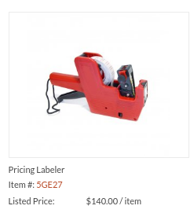
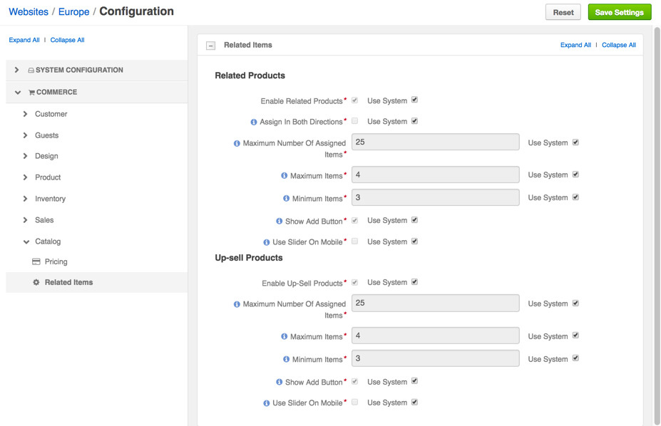

Manage Cross-Sell Products¶
Once the core product information is saved, you may configure cross-sell products to show in the Related Items section in the product details in the management console, and in the Cross-Sell Products section next to the product details in the storefront.
Use cross-sell products to bind similar products or those that compliment each other, like the item and its accessories.
To add cross-sell products to the product information:
Navigate to the Products > Products using the main menu.
Hover over the More Options menu to the right of the item and click the View icon to preview its details.
Navigate to the Related Items section and click the Quick Edit link in the section header.
The Related Items page appears.
Click Select Cross-Sell Products.
In the Select Cross-Sell Products For dialog:
- Select the Is Related check boxes next to the products to mark them as related. Use filter to limit the number of listed products and find the necessary items.
- Click Select Products.
This will close the dialog and update the related items list with the products you have selected.
Note
To delete a related item, click Delete next to it.
Once you are done adding the related items, click Save and Close.
Configuration¶
Configure cross-sell products globally, per website and organization.
Enable Cross-Sell Products Globally¶
Enable Cross-Sell Products per Organization¶
Cross-sell items listed for the product may include similar products or those that complement it, like the accessories.
In the system configuration, you can:
- Enable and disable cross-sell item management for the products.
- Limit the number of items displayed as related.
These settings may apply globally, on the organization level, and on the website level.
To update the cross-sell products settings per organization:
Navigate to System > User Management > Organizations in the main menu.
For the necessary organization, hover over the More Options menu to the right of the necessary organization and click the Configuration icon to start editing the configuration.
Select Commerce > Catalog > Related Items in the menu to the left.
The following page opens.

In the Cross-Sell Products, the following options are available:
Enable Cross-Sell Products — Toggles managing cross-sell items on/off. Enabled by default.
Maximum Number Of Assigned Items — A limit of cross-sell items that may be added to any product.
Maximum Items — A limit of cross-sell products that are shown to the buyer.
Note
Some cross-sell items may be hidden by the visibility settings. If the list of cross-sell products still exceeds the limit, only the specified number of items (top of the list) will be shown.
Minimum Items — The minimum number of cross-sell products that may be shown to the buyer. If the actual number of products is less than this value, the cross-sell products section is hidden in the storefront for the product.
Show Add Button — Enables a buyer to order a cross-sell product from the cross-sell products section in the main product details. When the option is disabled, a buyer needs to open the cross-sell product details before they can add it to the shopping list.
Show Add Button is Enabled

Show Add Button is Disabled
Use Slider On Mobile — When the option is enabled, one cross-sell product is displayed below the main product information. Other cross-sell products are accessible using the horizontal slider. Click < and > to slide through the cross-sell products.
To customize any of these options:
- Clear the Use Default check box next to the option.
- Set or clear the option, or enter the quantity.
Click Save.
Enable Cross-Sell Products per Website¶
Cross-sell items listed for the product may include similar products or those that complement it, like the accessories.
In the system configuration, you can:
- Enable and disable cross-sell item management for the products.
- Limit the number of items displayed as related.
These settings may apply globally, on the organization level, and on the website level.
To update the cross-sell products settings per website:
In the main menu, navigate to System > Websites.
For the necessary website, hover over the More Options menu to the right of the necessary website and click the Configuration icon to start editing the configuration.
Select Commerce > Catalog > Related Items in the menu to the left.
The following page opens.
In the Cross-Sell Products, the following options are available:
Enable Cross-Sell Products — Toggles managing cross-sell items on/off. Enabled by default.
Maximum Number Of Assigned Items — A limit of cross-sell items that may be added to any product.
Maximum Items — A limit of cross-sell products that are shown to the buyer.
Note
Some cross-sell items may be hidden by the visibility settings. If the list of cross-sell products still exceeds the limit, only the specified number of items (top of the list) will be shown.
Minimum Items — The minimum number of cross-sell products that may be shown to the buyer. If the actual number of products is less than this value, the cross-sell products section is hidden in the storefront for the product.
Show Add Button — Enables a buyer to order a cross-sell product from the cross-sell products section in the main product details. When the option is disabled, a buyer needs to open the cross-sell product details before they can add it to the shopping list.
Show Add Button is Enabled
Show Add Button is Disabled
Use Slider On Mobile — When the option is enabled, one cross-sell product is displayed below the main product information. Other cross-sell products are accessible using the horizontal slider. Click < and > to slide through the cross-sell products.
To customize any of these options:
- Clear the Use Default check box next to the option.
- Set or clear the option, or type in the quantity.
Click Save.